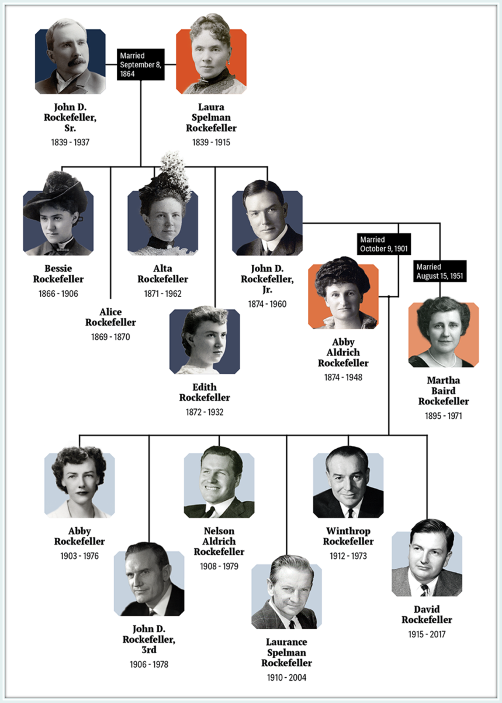

Vào đầu những năm 1900, khi Rockefeller cạnh tranh với Andrew Carnegie cho danh hiệu người đàn ông giàu nhất thế giới, một sự cạnh tranh gay gắt đã nảy sinh giữa Pháp và Đức, với mỗi bên đều tự xưng là đất tổ của Rockefeller. Các loại gia phả đã dược trưng ra để tạo ra một dòng dõi hoàng gia lộng lẫy cho trùm dầu mỏ. “Tôi không muốn trở lại giới quý tộc,” ông nói thành thật. “Tôi hài lòng với cổ phiếu Mỹ của mình.”
Cuộc tìm kiếm đầy tham vọng về nguồn gốc của Rockefeller đã bắt nguồn từ một gia đình Pháp thế kỷ thứ chín, Roquefeuilles, người được cho là sinh sống trong lâu đài Languedoc — một câu chuyện quyến rũ nhưng không may đã bị bác bỏ bởi những phát hiện gần đây. Ngược lại, dòng dõi người Đức của Rockefellers đã được xác thực rõ ràng ở thung lũng Rhine ít nhất là vào đầu những năm 1600.

Vào khoảng năm 1723, Johann Peter Rockefeller, một thợ xay, đã cùng vợ và năm người con của mình, lên đường đến Philadelphia, và định cư tại một trang trại ở Somerville và sau đó là Amwell, New Jersey, nơi ông đã phát triển mạnh mẽ và có được nhiều đất đai. Hơn một thập kỷ sau, người anh họ Diell Rockefeller của ông rời miền Tây Nam nước Đức và chuyển đến Germantown, New York. Cháu gái Christina của Diell đã kết hôn với người họ hàng xa của mình là William, một trong những cháu trai của Johann. (John D. Rockefeller đã dựng một tượng đài cho tộc trưởng, Johann Peter, tại khu chôn cất ông ở Flemington, New Jersey). Cuộc hôn nhân của William và Christina sinh ra một người con trai tên là Godfrey Rockefeller, ông nội của người khổng lồ dầu mỏ. Năm 1806, Godfrey kết hôn với Lucy Avery ở Great Barrington, Massachusetts, bất chấp sự ái ngại nghiêm trọng của gia đình bà.
Thiết lập một khuôn mẫu sẽ được tái tạo bởi chính mẹ của Rockefeller, Lucy, theo bỏ ngoài tai sự chê bai của gia đình, đã kết hôn. Tổ tiên của bà đã di cư từ Devon, Anh, đến Salem, Massachusetts, vào khoảng năm 1630, tạo thành một phần của Thanh giáo. Khi họ trở nên ổn định, những người Avery linh hoạt đã sinh ra các mục sư, binh lính, lãnh đạo dân sự, nhà thám hiểm và thương nhân, chưa kể đến một loạt các chiến binh. Trong cuộc Cách mạng Hoa Kỳ, 11 người Avery đã hy sinh vẻ vang trong trận chiến Groton. Trong khi nguồn gốc “quý tộc” của Rockefellers chỉ là hư danh, Lucy chỉ có thể tuyên bố có nguồn gốc từ Edmund Ironside, vua Anh, người lên ngôi năm 1016.
Godfrey Rockefeller thật đáng buồn khi không xứng đôi với người vợ táo bạo của mình. Ông yếu đuối, tiều tụy và sống trong một bầu không khí u ám. Cao hơn chồng, một Baptist rực lửa, Lucy là người mạnh mẽ và tự tin, với bước đi vững chắc và đôi mắt xanh cảnh giác. Từng là giáo viên của trường, bà ấy được giáo dục tốt hơn Godfrey. Ngay cả John D., không bao giờ đưa ra những nhận xét xấu về họ hàng, cũng khéo léo thừa nhận, “Bà tôi là một người phụ nữ dũng cảm. Chồng bà không được như bà.” Nếu Godfrey góp phần tạo màu cho Rockefeller — mắt xám xanh, tóc nâu nhạt — thì Lucy đã giới thiệu dáng người rất đáng chú ý cho những người nam hậu duệ. Tận hưởng nguồn năng lượng dồi dào và sức khỏe dẻo dai, Lucy có mười người con, với người con thứ ba, William Avery Rockefeller, sinh ra ở Granger, New York, vào năm 1810. Mặc dù có thể dễ dàng xác định ngày sinh của cha Rockefeller, nhưng một ngày nào đó các đội phóng viên lo lắng, cố gắng thiết lập ngày mất của ông.
Là một nông dân và một doanh nhân, Godfrey đã từng thành công vang dội, nhưng những dự án kinh doanh dang dở khiến gia đình ông phải trải qua một cuộc sống bấp bênh. Họ buộc phải chuyển đến Granger và Ancram, New York, sau đó đến Great Barrington, trước khi trở lại Livingston, New York. Sự giáo dục của John D. Rockefeller sẽ luôn đầy những cảnh báo về những người đàn ông yếu đuối đi lạc đường. Godfrey hẳn đã được coi như một hình mẫu nên tránh. Theo tất cả các tài khoản, ông nội là một người vui tính, tốt bụng nhưng vô tâm và nghiện rượu, tạo ra trong Lucy một mối hận thù vĩnh viễn đối với rượu mà bà chắc hẳn đã truyền cho cháu trai của mình. Ông nội Godfrey là người đầu tiên thiết lập trong tâm trí của John D. một phương trình lâu dài giữa tính cách ga lăng và xuề xòa, khiến người sau này thích xã hội của những người đàn ông tỉnh táo, kín tiếng trong việc làm chủ hoàn toàn cảm xúc của mình.
Hồ sơ Rockefeller đưa ra nhiều kịch bản khác nhau về lý do tại sao Godfrey và Lucy đóng gói đồ đạc của họ vào một toa xe Conestoga quá tải và đi về phía tây từ năm 1832 đến năm 1834. Theo một tài khoản, nhà Rockefeller, cùng với một số người hàng xóm, đã bị tước đoạt đất đai của họ trong một cuộc tranh chấp quyền sở hữu gay gắt với một số nhà đầu tư người Anh. Một tài khoản khác cho một doanh nhân vô đạo đức lừa Godfrey hoán đổi trang trại của mình để lấy cái có giá có hơn ở Tioga County. (Nếu tuyên bố này là đúng, nó chứng tỏ là một trò lừa bịp độc ác). Một số người thân sau đó nói Michigan là điểm đến thực sự của Godfrey nhưng Lucy đã phủ quyết việc di dời, bà thích văn hóa New England của vùng ngoại ô New York hơn là vùng hoang dã của Michigan.
Dù lý do là gì, nhà Rockefeller đã tái hiện nghi thức nguyên thủy của người Mỹ để tìm kiếm cơ hội mới. Vào những năm 1830, nhiều người định cư từ Massachusetts và Connecticut đã hào hứng đổ xô đến các khu vực hoang dã ở phía tây New York, một cuộc di cư mà Alexis de Tocqueville mô tả là “một trò chơi may rủi” theo đuổi “những cảm xúc mà nó kích thích, cũng như để đạt được nó.” Việc xây dựng Kênh đào Erie vào những năm 1820 đã thu hút nhiều người định cư đến khu vực này. Godfrey và Lucy chất đống tài sản của họ trong một chiếc xe kéo trên thảo nguyên phủ bạt, được kéo bởi những con bò, và đi về phía lãnh thổ còn thưa thớt dân cư. Trong hai tuần, họ đi dọc theo lối rẽ Albany-Catskill đầy bụi bặm, len lỏi qua những khu rừng bị cấm đen tối như bối cảnh của câu chuyện cổ tích Grimms. Với nhiều hành lý và ít chỗ cho hành khách, nhà Rockefeller phải đi bộ trong phần lớn hành trình, với Lucy và những đứa trẻ (ngoại trừ William, người không đi cùng họ) thay phiên nhau ngồi trong xe mỗi khi họ mệt mỏi. Cuối cùng khi họ đến đích, Richford, New York, ba dặm rưỡi cuối cùng đặc biệt gian nan, và con bò ‘ể oải’ trên con đường gồ ghề đầy khó khăn. Cuối cùng, họ phải đưa đội bóng kiệt sức của mình leo lên một sườn đồi gần như thẳng đứng để chiếm lấy sáu mươi mẫu đất cho mình. Như truyền thuyết của gia đình kể lại, Godfrey đã ra ngoài, đi bộ lên đỉnh của khu đất, kiểm tra xung quanh và nói một cách buồn bã, “Điều này giống như chúng ta đã đến Michigan.” Vì vậy, trong một đài tưởng niệm cho những hy vọng vụt tắt, địa điểm sẽ mãi mãi mang cái tên u sầu - Đồi Michigan.
Thậm chí ngày nay hầu như chỉ còn hơn một ngã tư, Richford khi đó là một điểm dừng xe ngựa ở vùng đất nhiều cây cối ở phía đông nam Ithaca và phía tây bắc Binghamton. Cư dân ban đầu của khu vực, người Iroquois, đã bị đánh đuổi sau cuộc Cách mạng Hoa Kỳ và được thay thế bởi các cựu chiến binh quân đội cách mạng. Vẫn còn là một biên giới hoang dã khi nhà Rockefeller đến, vùng đất tù túng này gần đây đã được coi là thị trấn, quảng trường của nó có niên đại từ năm 1821. Nền văn minh chỉ tồn tại thưa thớt. Các khu rừng rậm ở khắp các phía đầy trò chơi - gấu, hươu, báo, gà rừng và thỏ đuôi dài - mọi người mang theo những ngọn đuốc vào ban đêm để xua đuổi bầy sói đang lang thang.
Vào thời điểm John D. Rockefeller sinh ra 1839, Richford đang có được những tiện nghi của một thị trấn nhỏ. Nó có một số ngành công nghiệp non trẻ — xưởng cưa, cối xay và nhà máy chưng cất rượu whisky — cùng với một ngôi trường và một nhà thờ. Hầu hết cư dân đều kiếm sống bằng nghề nông khó nhọc, nhưng những người mới đến rất hy vọng và dám nghĩ dám làm. Bất chấp những cạm bẫy ở biên giới, họ đã mang theo văn hóa thanh đạm của Thanh giáo New England, mà John D. Rockefeller sẽ là một ví dụ điển hình.
Cơ ngơi ‘dốc đứng’ của nhà Rockfeller cung cấp một bức tranh toàn cảnh bao quát về một thung lũng màu mỡ. Các sườn núi rải rác hoa dại, hạt dẻ và quả mọng rất nhiều vào mùa thu. Giữa vẻ đẹp của sylvan này, các Rockfeller đã phải vật lộn với cuộc sống của người spartan. Họ làm một ngôi nhà nhỏ đơn sơ, dài 22 feet và ngang 16 feet, được trang trí bằng những thanh gỗ và xà ngang đẽo bằng tay. Đất lẫn nhiều đá đến mức cần phải có những nỗ lực anh dũng mới có thể xuyên qua bụi rậm và băng qua những sườn núi rậm rạp với nhiều cây thông, cây huyết dụ, cây sồi và cây phong.
Tốt nhất chúng ta có thể đánh giá từ một số giai thoại còn sót lại, Lucy quản lý tốt cả gia đình và trang trại và không bao giờ trốn tránh công việc nặng nhọc. Được hỗ trợ bởi một đội quân, bà đã tự mình xây dựng cả một bức tường đá và sự nhanh trí, tháo vát sẽ xuất hiện trở lại trong cháu trai bà. John D. thích thú khi kể về việc một đêm bà vồ trúng một tên trộm ngũ cốc trong kho thóc tối om của họ. Không thể nhận ra khuôn mặt của kẻ đột nhập, bà có đủ bình tĩnh để cắt một mảnh vải từ tay áo khoác của anh ta. Sau đó, khi bà phát hiện ra chiếc áo khoác bị rách của người đàn ông, bà đối mặt với tên trộm kinh ngạc với miếng vải còn thiếu; đã âm thầm đưa ra cảnh báo của mình, bà ấy không bao giờ ép buộc. Một điều cuối cùng về Lucy đáng được đề cập: Bà rất quan tâm đến các loại thuốc thảo dược và các phương thuốc tự nấu tại nhà được chế biến từ một “bụi cây lý” ở sân sau. Nhiều năm sau, đứa cháu trai tò mò của bà đã gửi mẫu vật của bụi cây đến phòng thí nghiệm để xem chúng có giá trị dược liệu thực sự hay không. Có lẽ chính từ Lucy mà ông ấy đã thừa hưởng niềm đam mê với y học xuyên suốt cuộc đời mình, ngay từ khi thành lập viện nghiên cứu y khoa ưu việt của thế giới.
Khi ở tuổi 20, William Avery Rockefeller đã là một kẻ thù không đội trời chung của đạo đức thông thường, người đã chọn cho mình một sự tồn tại mơ hồ. Ngay cả khi còn ở tuổi vị thành niên, anh ta đã biến mất trong những chuyến đi xa vào giữa mùa đông, không cung cấp manh mối nào về nơi ở. Trong suốt cuộc đời của mình, ông đã tiêu tốn nhiều năng lượng cho các mánh khóe và âm mưu để tránh làm việc nặng nhọc. Nhưng anh ta lại sở hữu một sức hấp dẫn khủng khiếp và vẻ ngoài điển trai - anh ta cao gần 1.8 m, với một bộ ngực rộng, vầng trán cao và bộ râu màu nâu vàng dày bao phủ một cái hàm lớn - khiến mọi người ngay lập tức bị cuốn hút. Mặt tiền hấp dẫn, ít nhất trong một thời gian, đã ru ngủ những người hoài nghi và những người chỉ trích. Không có gì ngạc nhiên khi người du mục này không đi cùng cha mẹ trong chuyến đi về phía tây đến Richford mà thay vào đó, đã trôi dạt vào khu vực vào khoảng năm 1835 theo phong cách không thể bắt chước của riêng mình. Khi lần đầu tiên xuất hiện ở một ngôi làng lân cận, anh đã nhanh chóng gây ấn tượng với người dân địa phương bằng phong cách không chính thống của mình. Trong vai một người bán hàng rong câm điếc bán những thứ mới lạ rẻ tiền, anh ta giữ một tấm bảng nhỏ có dòng chữ “Tôi bị câm điếc” được treo trên cổ của mình. Anh ta trò chuyện với người dân địa phương và sau đó khoe khoang cách anh ta khai thác mưu mẹo này để lật tẩy mọi bí mật của thị trấn. Để chiếm được lòng tin của những người lạ và làm họ mềm lòng để mua hàng, anh ta dùng một chiếc kính vạn hoa, mời mọi người nhìn vào nó, và anh ta đã thoát khỏi sự phát hiện trong gang tấc tại nhà của một Deacon Wells. Vị phó tế và con gái của ông, bà Smith, đã thương hại người bán rong tội nghiệp đã gõ cửa nhà họ vào một ngày thứ Bảy và che chở anh ta trong nhà của họ vào đêm hôm đó. Sáng hôm sau, khi họ mời anh ta đến nhà thờ, Big Bill phải dùng đến một số động tác chân ưa thích, vì anh ta luôn tránh xa đám đông, nơi ai đó có thể nhận ra anh ta và vạch trần sự bất lương của anh ta. “Billy nói với [phó tế] bằng cách viết ra rằng anh ấy thích đến nhà thờ, nhưng sự ốm yếu đã khiến anh ấy bị nhìn chằm chằm, đến nỗi anh ấy cảm thấy bị hành hạ và sẽ không đi,” một người dân thị trấn nhớ lại. “Anh ấy thực sự lo sợ có thể bị ai đó phát hiện.” Bảy tháng sau, khi thầy phó tế và Big Bill đều chuyển đến Richford, cô Smith phát hiện ra người câm điếc tại một buổi họp mặt xã hội và ngạc nhiên trước sự hồi phục thần kỳ của anh ấy - phát biểu. “Tôi thấy cậu có thể nói chuyện tốt hơn so với lần trước,” cô nói. Big Bill mỉm cười, không hề bối rối, lòng can đảm của anh ta vẫn còn nguyên vẹn. “Đúng vậy, tôi đã cải thiện được phần nào.” Khi anh đến Richford, người dân địa phương ngay lập tức được thưởng thức tài nghệ của anh, và anh ấy lướt qua một bảng câu hỏi với chữ viết nguệch ngoạc, “Nhà của Godfrey Rockefeller ở đâu?”
Vì anh ta thường đưa ra những tuyên bố sai sự thật về bản thân và sản phẩm của mình, nên Bill đã kiếm ăn trên một phạm vi rộng lớn để trốn tránh pháp luật. Anh đang đi lang thang hơn ba mươi dặm về phía tây bắc Richford, trong vùng lân cận của Niles và Moravia, khi lần đầu tiên anh gặp người vợ tương lai của mình, Eliza Davison, tại trang trại của cha cô. Với khả năng trình diễn và tự quảng cáo, anh ta luôn mặc những chiếc áo vest đính kim sa hoặc những bộ quần áo màu sắc rực rỡ chắc hẳn đã làm lóa mắt một cô gái nông dân được che chở như Eliza. Giống như nhiều người bán hàng rong ở những vùng nông thôn, anh ta là một người nói suông về những giấc mơ cùng với những món đồ lặt vặt, và Eliza đã đáp lại người lang thang lãng mạn này. Cô đã bị sự hài hước câm điếc của anh ta thu hút đến mức cô bất giác thốt lên trước sự chứng kiến của anh ta, “Tôi sẽ cưới người đàn ông đó nếu anh ta không bị câm điếc,” cô ấy sớm khuất phục, cũng như những người phụ nữ khác, trước sự quyến rũ đầy mê hoặc của anh ta.
Là một Baptist thận trọng, sống khép kín mang dòng máu Scotland-Ireland, rất gắn bó với con gái mình, John Davison hẳn đã cảm nhận được thế giới rắc rối đang chờ đợi Eliza nếu cô kết hôn với Big Bill Rockefeller, và ông ấy đã hết sức can ngăn. Trong những năm sau đó, Eliza Rockefeller dường như là một con quay khô héo, nhưng vào cuối năm 1836, cô đã là một phụ nữ trẻ mảnh mai, đầy tinh thần với mái tóc đỏ rực và đôi mắt xanh. Hiếu đạo và sống khép kín, cô là phản đề của Bill và có lẽ vì lý do đó mà anh ta thấy mình bị thôi miên. Ai biết được điều gì u ám quanh bậc cửa của cô ấy đã được xua tan bởi tiếng cười của Bill? Mẹ cô qua đời khi Eliza mới mười hai tuổi - bà đã chết sau khi uống một viên thuốc do một bác sĩ lang băm bán - và Eliza được chị gái Mary Ann nuôi dưỡng, khiến Eliza bị tước mất quyền tư vấn của người mẹ.
Vào ngày 18 tháng 2 năm 1837, bất chấp sự phản đối rõ ràng của John Davison, cặp đôi khó tin nhất này - Bill hai mươi bảy, Eliza hai mươi bốn - đã tổ chức đám cưới tại nhà của một trong những người bạn của Eliza. Cuộc hôn nhân là một câu chuyện phiếm yêu thích của những người dân thị trấn Richford, những người có xu hướng theo dõi Bill. So với Davisons, Rockefellers là những người dân quê nghèo, và rất có thể Bill bị mê hoặc bởi những báo cáo về sự giàu có khiêm tốn của John Davison. Ngay từ năm 1801, Davison tiết kiệm đã mua được 150 mẫu Anh ở Cayuga County. Theo lời của John D., “Ông tôi là một người giàu có. Vào những ngày đó, ai kiếm được tiền từ trang trại của mình và có một ít tiền dự trữ được coi là giàu có. Bốn, năm hoặc sáu nghìn đô la đã được tính là giàu. Ông tôi có lẽ có ba hoặc bốn lần như vậy. Ông ấy có tiền để cho vay.”
Hầu hết cư dân Richford đều tin cuộc gặp gỡ của Big Bill với Eliza không phải là ngẫu nhiên mà được dự tính từ trước để lấy tiền của cha cô. Một người bán hàng nổi tiếng coi mọi phụ nữ trẻ đẹp như một cuộc chinh phục tiềm năng, Bill đã có ít nhất một mối tình lãng mạn nghiêm túc trước sự say mê dành cho Eliza. Như Ralph P. Smith, một cư dân Richford lâu năm, nhớ lại, “Billy chưa kết hôn khi đến đây, và lẽ ra cậu ấy sẽ cưới Nancy Brown, người quản gia của anh ấy, nhưng anh ta đã đoạn tuyệt với cô ấy, cho cô ấy một khoản tiền khoảng 400 đô la khi anh ta đã giành được con gái của John Davison giàu có, ở Niles, ngoại ô Moravia.” Câu chuyện được chứng thực bởi bà John Wilcox, chị họ của John D., người đã nói, “Nancy Brown, ở Harford Mills, là một cô gái xinh đẹp, rất đẹp. William đã yêu cô ấy. Cô thật tội nghiệp. William sẽ có tiền. Cha của Eliza Davison đã cho cô 500 đô la khi kết hôn; vì vậy William đã kết hôn với cô ấy.”
Cuộc hôn nhân này, được kết thúc dưới sự giả tạo, đã kết hợp cuộc sống của hai nhân cách rất khác nhau, tạo tiền đề cho tất cả những đau lòng trong tương lai, bất hòa trong hôn nhân và bất ổn kinh niên vốn sẽ hun đúc mạnh mẽ tính cách trái ngược của John D. Rockefeller.
Khi Bill đưa cô dâu của mình trở lại ngôi nhà Richford mà anh ấy đã xây dựng cách nơi ở của cha mẹ mình nửa dặm, Eliza hẳn đã suy nghĩ rất kỹ về sự không đồng ý của cha cô: Cuộc sống hứa hẹn sẽ khó khăn và tồi tàn trong ngôi nhà xập xệ. Những bức ảnh còn sót lại về nơi sinh của John D. Rockefeller cho thấy một ngôi nhà bằng ván gỗ đơn sơ nằm trên một con dốc không có cây, có đường viền mờ ảo trên nền trời. Ngôi nhà thô sơ trông giống như hai chiếc hộp gắn liền với nhau, sự đơn sơ khắc khổ chỉ bị phá vỡ bởi một mái hiên nhỏ trên một cánh cửa. Tuy bề ngoài còn nguyên sơ, ngôi nhà ấm cúng được xây dựng kiên cố bằng gỗ rừng địa phương. Tầng chính có hai phòng ngủ và một phòng khách, trên cùng là gác xép ngủ thấp và phòng để đồ trên gác mái; tòa nhà nhỏ gắn liền với vai trò như một nhà kho. (Nơi sinh của vị vua dầu hỏa tương lai có lẽ được thắp sáng bằng dầu tinh trùng [1] hoặc nến mỡ động vật). Khuôn viên rộng hơn nhiều so với ngôi nhà, vì khu đất rộng năm mươi mẫu Anh [2] bao gồm một vườn táo và một đoạn Owego Creek đầy cá hồi, sủi bọt dọc theo khu đất.
Chẳng bao lâu sau, Eliza đã vỡ mộng. Không từ bỏ bạn gái của mình, Nancy Brown, Bill đưa cô vào ngôi nhà chật chội như một “quản gia” và bắt đầu có con, luân phiên, với vợ và tình nhân. Năm 1838, Eliza sinh đứa con đầu lòng của họ, Lucy, sau đó vài tháng là cô con gái ngoài giá thú đầu tiên của Nancy, Clorinda. Vào đêm ngày 8 tháng 7 năm 1839, Bill và Eliza một lần nữa triệu tập bà đỡ, lần này là để đỡ đẻ cho một cậu bé, đến thế giới trong căn phòng ngủ trống trơn cao 2.4 m. Đứa trẻ này, được sinh ra trong nhiệm kỳ tổng thống của Martin Van Buren và được định trở thành nhà tư bản hàng đầu của đất nước, sẽ sống đến nhiệm kỳ thứ hai của Franklin D. Roosevelt. Giống như nhiều ông trùm tương lai khác - Andrew Carnegie (sinh năm 1835), Jay Gould (1836) và J. Pierpont Morgan (1837) - ông sinh vào cuối những năm 1830 và do đó sẽ trưởng thành vào đêm trước của thời kỳ hậu Chiến tranh - bùng nổ công nghiệp. Vài tháng sau khi sinh John, Nancy Brown sinh con gái thứ hai, Cornelia, điều đó có nghĩa là Bill, chúa tể hậu cung của chính mình, đã có thể sinh được bốn đứa con dưới một mái nhà chỉ trong hai năm. Do đó, John Davison Rockefeller sùng đạo (được đặt theo tên người cha tỉnh táo của Eliza) bị kẹp chặt giữa hai chị em ngoài giá thú, sinh ra trong hoàn cảnh trớ trêu.
Eliza không thể cảm thấy thoải mái khi ở bên chồng. Nhìn chung, Rockefellers là những người hòa đồng và vui tính, thích âm nhạc, rượu và những thời điểm vui vẻ náo nhiệt, và tuân theo một lối sống biên cương hoang dã. Là người mẹ mạnh mẽ, Lucy là một ngoại lệ dễ thấy, và Eliza đến gần bà trong khi cau mày với nhiều người khác. Trong thời kỳ Richford, em trai Bill, Miles Avery Rockefeller, đã bỏ vợ và đến Nam Dakota cùng với Ella Brussee, một phụ nữ trẻ đã làm công cho gia đình Eliza. Trong một động thái định sẵn một kế hoạch trong tương lai cho Bill, Miles đã có cuộc hôn nhân nổi tiếng với Ella và lấy tên đệm làm họ mới của mình. Những cuộc sống như vậy rất phổ biến vào thời kỳ mà nước Mỹ có một biên giới rộng lớn, không có bản đồ và vô số các khu hoang dã.
Đối với một cô gái nông dân chân ướt chân ráo mới về nhà, Eliza tỏ ra bao dung với Nancy Brown một cách bất ngờ. Trái ngược với những gì người ta có thể mong đợi, cô thương hại kẻ đột nhập này, có lẽ xem xét hình phạt phù hợp với ménage à trois [3] tù túng vì đã làm trái lời khuyên của cha cô. Khi cô cháu gái quan sát, “Dì Eliza yêu chồng và thích Nancy tội nghiệp. Nhưng các anh trai của dì Eliza đã xuống và bắt William đuổi Nancy đi.” Trong thời kỳ Eliza về nhà chồng, ông Davison ít xuất hiện, khiến người ta tự hỏi liệu ông đã buông tay với đứa con gái không vâng lời của mình hay đã thu mình lại bởi cảm giác tội lỗi và xấu hổ, cô đã che giấu những rắc rối của mình với cha. Theo một tài khoản, khi Eliza thường xuyên cãi vã sau cuộc hôn nhân với Bill, ông đã nắm bắt cơ hội để trục xuất cô bồ nhí ra khỏi ngôi nhà chật chội. Để ý đến những lời cầu xin từ Davisons, Bill đã đưa Nancy và hai cô con gái đến sống với bố mẹ cô ở Harford Mills gần đó. Truyền thuyết gia đình cho rằng Bill, người có lương tâm yếu ớt nhưng không hoàn toàn ngủ yên, đã bí mật gửi những gói quần áo trước cửa nhà cô. May mắn thay, những năm tháng chung sống với Bill đã không làm phai nhạt cuộc đời của Nancy, vì cô đã kết hôn với một người đàn ông tên là Burlingame, sinh thêm những đứa con khác và cung cấp cho hai cô con gái đầu một sự nuôi dạy đáng kính. Cornelia lớn lên trở thành một giáo viên cao lớn, thông minh, hấp dẫn và có nét giống với Big Bill. Đôi khi Bill chấp nhận những đòi hỏi của cô về tiền bạc, nhưng có những giới hạn nghiêm ngặt đối với sự hào phóng của Bill và ông sẽ từ chối khi cô đòi hỏi nhiều. Cornelia kết hôn với một người đàn ông tên là Sexton và ở lại vùng Richford, nhưng chỉ một số cư dân địa phương và họ hàng của Rockefeller biết cô là em gái cùng cha khác mẹ của John D. người đàn ông giàu nhất thế giới. Không thể xác định được liệu Rockefeller có từng biết đến sự tồn tại của hai cô em gái cùng cha khác mẹ ngoài giá thú của mình hay không.
Cuộc tình của Nancy Brown không phải là sự bất bình duy nhất đến với Eliza, vì cô ấy thường bị Bill bỏ rơi trong ba năm không vui vẻ ở Richford. Anh vẫn là một người theo chủ nghĩa cá nhân không ngừng nghỉ và bất chấp, người thích cuộc sống vượt ra khỏi sự nhạt nhòa của xã hội. Đầu cuộc hôn nhân, anh ta ở lại một thời gian, điều hành một xưởng cưa nhỏ trên Đồi Michigan và kinh doanh muối, lông thú, ngựa và gỗ, nhưng anh ta nhanh chóng tiếp tục cuộc sống lững thững của một người bán rong, những chuyến đi của anh ta được che đậy trong bí ẩn khó lường. Giống như một kẻ chạy trốn, anh ta sẽ khởi hành một cách bí ẩn trong màn đêm và quay trở lại sau khi trời tối, vài tuần hoặc vài tháng sau đó, ném những viên sỏi vào cửa sổ để báo hiệu sự trở lại của mình. Để lo lắng cho gia đình khi vắng mặt, anh đã thu xếp tín dụng tại cửa hàng tổng hợp. “Hãy cho gia đình tôi bất cứ thứ gì họ muốn khi tôi đi vắng,” anh hướng dẫn Chauncey Rich, người mà cha, Ezekiel, đã thành lập Richford, “và khi tôi trở lại, tôi sẽ thanh toán.” Không bao giờ biết khi nào khoản tín dụng này có thể bị hủy bỏ, Eliza trở nên cực kỳ tiết kiệm và dạy các con của mình những châm ngôn tiết kiệm như “Lãng phí là tội ác.”
Khi Bill trở về nhà, một sự xuất hiện bất ngờ, tươi cười, anh ta sẽ cưỡi những con ngựa mới, mặc quần áo đẹp và vung một xấp tiền dày cộp. Trước khi đến gặp Eliza, anh ta sẽ trả tiền cho Chauncey Rich để anh ta có thể tự tin nói với cô rằng mọi thứ giờ đã được giải quyết. Sự quyến rũ của anh đã làm tan biến bất cứ sự thù địch nào mà sự vắng mặt đã khơi dậy; Phải mất thời gian trước khi sự vắng mặt kéo dài của anh ta và những lần phản bội lặp đi lặp lại đã đốt cháy sự lãng mạn của cô, để lại dư âm của sự cam chịu khắc nghiệt. Hiện tại, dù lo lắng hay cô đơn, cô ấy vẫn tỏ ra yêu kiều nữ tính trong những chuyến đi của anh, vẫn say đắm với người đàn ông ‘ham chơi’ của mình. “Chỉ cần nhìn vào mặt trăng đó!” Cô ấy đã từng thở dài với một người anh họ khi Bill đi vắng. “William, ở cách xa hàng dặm, có lẽ cũng đang nhìn nó, vào lúc này? Em hy vọng thế.”
Trên đường đi, Bill đã ứng biến những cách kiếm tiền kỳ ảo hơn bao giờ hết. Một cú nổ súng, anh ta thực hiện một mạch các cuộc thi bắn súng, thường mang tiền thưởng về nhà. Là một người ham chơi vui vẻ, anh ta đã bán nhẫn và các loại đồ trang sức khác với mức giá cao ngất ngưởng. Tuy nhiên, phần lớn, anh tự phong cho mình là “bác sĩ thực vật” hoặc “bác sĩ thảo dược” — các thuật ngữ được một số hậu duệ của Rockefeller ví von một cách trung thực. Vào thời điểm mà các bác sĩ vẫn phải dùng đến các phương pháp ‘dân giả’, và nhiều khu vực thiếu điều kiện chăm sóc y tế, những người bán hàng lưu động như vậy đã lấp đầy khoảng trống. Tuy nhiên, ở William Avery Rockefeller, người ta phát hiện ra sự dễ dãi và tội lỗi của trò lừa đảo. Đôi khi anh ấy bán rong những chai thuốc tiên tự pha tại nhà hoặc những loại thuốc đã được cấp bằng sáng chế mua từ các nhà nghiên cứu thuốc, nhưng anh ấy đã ghi được thành công lớn nhất của mình với những loại thuốc tự nhiên được lấy từ bụi cây của Lucy. Mặc dù mẹ anh thực sự quan tâm đến các phương pháp chữa bệnh bằng thảo dược, nhưng Bill sẽ xuyên tạc hoặc phóng đại các đặc tính của chúng. Ví dụ, anh ta thu hoạch những quả mọng nhỏ, màu tía từ khu vườn của bà, giống như những viên thuốc nhỏ và sẽ bán chúng cho vợ của những người nông dân như một phương thuốc trị bệnh dạ dày. Lời rao bán hàng của anh ta thậm chí còn đi xa hơn, vì, như một người hàng xóm Richford đã báo cáo nhiều năm sau đó, “anh ta sẽ nghiêm khắc cảnh báo họ rằng không được đưa chúng cho một phụ nữ trong tình trạng mỏng manh, vì họ chắc chắn sẽ phá thai. Sau đó, anh ta sẽ bán những viên thuốc của mình với giá cao. Chúng hoàn toàn vô hại, và anh ta không phạm luật khi bán chúng. Anh ấy có trí tưởng tượng đáng nể.”
Những lời nói luyên thuyên vào lúc nửa đêm và thương mại đặc biệt của William Rockefeller đã khiến công dân Richford hoang mang. Anh ta tạo ra rất nhiều lời đồn thổi và suy đoán đến nỗi họ đặt tên cho anh ta là Devil Bill. Trong thị trấn thường xuyên có tin đồn rằng anh ta là một con bạc, một tên trộm ngựa, một kẻ liều lĩnh. Mặc dù anh ta có vẻ hoạt động ngoài lề luật pháp, nhưng mọi người vẫn vui mừng bởi sự hài hước vô tội vạ và những câu chuyện cao siêu của anh ta, nếu thất vọng trước cách đối xử của anh ta với gia đình của mình. “Cuối cùng khi thành công với tư cách là một người bán rong, anh ấy sẽ ăn mặc như một hoàng tử và khiến mọi người không khỏi thắc mắc,” một người dân thị trấn tham gia trò chơi đoán về các nguồn thu nhập đa dạng của Bill cho biết. “Anh ấy đã cười rất nhiều và thích thú với những suy đoán mà anh ấy gây ra. Anh ấy không phải là một người uống rượu và đối xử tốt với gia đình khi anh ấy ở nhà, nhưng mọi người đều biết anh ấy đã bỏ bê gia đình bằng cách để họ phải thay phiên nhau làm việc trong nhiều tháng dài.”
Sau một lần vắng mặt kéo dài trong vài tháng, khi hóa đơn của Eliza tại Chauncey Rich’s đã lên đến một nghìn đô la, thì có tin đồn Devil Bill đã bị bắt. Thay vào đó, giống như một cảnh sát thôn quê, anh ta chạy lon ton vào thị trấn trong một cỗ xe lộng lẫy, ngồi sau một đội ngựa mới, những viên kim cương lấp lánh trên chiếc áo sơ mi. Tại cửa hàng tổng hợp, anh ấy đã thanh toán các hóa đơn. Sau những chuyến đi như vậy, Bill tụ tập bạn bè và gia đình xung quanh bàn ăn tối và anh sẽ kể cho họ những câu chuyện về cuộc phiêu lưu của anh giữa những người định cư phía Tây và thổ dân da đỏ. Devil Bill có sở trường dệt những kinh nghiệm của mình thành những câu chuyện thần chú, biến Eliza và những đứa trẻ trở thành đối tác trong chuyến du hành của anh ta. Với tư cách là nạn nhân chính trong các cuộc tấn công của Bill, Eliza nhận được sự đồng cảm từ những người hàng xóm, những người cảm thấy cô đang bị chồng bạo hành. Tuy nhiên, cô vẫn trung thành với anh ấy, từ chối nhiều cơ hội để tố cáo và là một phụ nữ có phẩm giá.
Tuy những tuyên bố về tiểu sử, thường xuyên bị thổi phồng về tuổi thơ nghèo khó của John D. Rockefeller đã được thực hiện, nhưng vẫn có một số sự thật ở Richford. Một người hàng xóm nhận xét: “Tôi không nhớ mình đã từng thấy những đứa trẻ bị bỏ rơi đáng thương hơn. Quần áo của chúng cũ kỹ và rách nát, trông bẩn thỉu và đói khát.” Đó là thước đo cho sự tuyệt vọng của Eliza khi cô tìm kiếm sự giải thoát trong nhà của anh rể mình, Jacob Rockefeller, một người đàn ông ngỗ ngược, vui tính, gia cảnh tương đối. Một câu chuyện kể về Jacob đã thuật lại cách anh ta thắng một vụ cá cược 5 đô la bằng cách không uống rượu trong suốt chuyến đi đến thị trấn. Người vợ tốt bụng của Jacob đã trở thành người mẹ thứ hai của hai đứa trẻ mới biết đi, Lucy và John, mặc quần áo cho chúng và đan găng tay cho chúng.
Trong hoàn cảnh u ám, Eliza dường như rút được sức mạnh từ nghịch cảnh. Một người gốc Richford ca ngợi cô ấy là “một người phụ nữ xuất sắc, nhưng là người gánh vác quá nặng nề vào thời điểm đó để chăm sóc con cái. Chồng cô ấy đi vắng dài ngày, và cô phải trông nom trang trại rộng sáu mươi mẫu và cố gắng trang trải chi phí. Cô ấy không biết những người chủ cửa hàng trong làng có thể đóng cửa vì tín dụng của cô ấy vào lúc nào, và cô ấy đã làm việc rất chăm chỉ.”
Khi John D. sau đó gợi lại thời thơ ấu bình dị, ngập tràn ánh nắng của mình ở ngoại ô New York, anh đã xóa sổ Richford khỏi ký ức. Mới ba khi anh rời khỏi đó, anh chỉ còn giữ lại một vài ký ức mơ hồ về nơi này. “Tôi nhớ rất rõ con suối chạy gần trước nhà và tôi đã phải cẩn thận hết mức để tránh xa nó. Tôi mơ hồ nhớ đến mẹ ở Richford và bà tôi, người sống cách đó nửa dặm hoặc xa hơn trên ngọn đồi.” Một lưu ý rằng ký ức sớm nhất của Rockefeller gắn liền với sự thận trọng và ông khác người cha vắng mặt cùng ông nội say xỉn trong khi vẫn giữ được sự mạnh mẽ, bền bỉ của mẹ và bà. Ông luôn sở hữu năng lực tự bảo vệ khác thường để kìm nén những ký ức khó chịu và giữ cho những điều đó củng cố quyết tâm của mình.
Như chúng ta có thể nói, Rockefeller không biết gì về Nancy Brown và khía cạnh sâu thẳm của cuộc sống tại Richford, nhưng ông vẫn mang trong mình một cảm giác mơ hồ về nơi sinh. “Tôi rùng mình khi nghĩ đến những gì đáng lẽ sẽ xảy ra nếu tôi ở lại Richford cả đời,” ông tâm sự sau này. “Có nhiều người đàn ông thích săn bắn, đánh cá, và uống rượu whisky, và chỉ đạt được một chút thành công trong cuộc sống, chỉ vì thiếu một chút tôn giáo.” Về quyết định rời Richford của gia đình, Rockefeller đã đưa ra một lời giải thích, kinh tế có lẽ được coi là câu chuyện trang bìa tiêu chuẩn cho thời thơ ấu: đất chua. Rockefeller sẽ nói: “Ở đó thật đẹp, nhưng những người định cư đã lãng phí sức lực của họ trong việc cố gắng làm cho cây trồng phát triển trên đất xấu.” Tất nhiên, lý do thực sự, là nỗi kinh hoàng của Eliza trước giọng điệu đạo đức thấp kém của thị trấn, được phản ánh bởi một nhà thờ duy nhất của nó; bà có lẽ cũng háo hức muốn loại bỏ bọn trẻ khỏi ảnh hưởng của những thành viên Rockefeller sôi nổi, say xỉn và để chúng tiếp xúc với Davisons kiên định hơn. Không phải ngẫu nhiên, nhà Rockefeller chuyển đến Moravia, cách trang trại Davison ba dặm, nơi Eliza sống gần cha mình trong thời gian chồng cô thường xuyên vắng mặt.